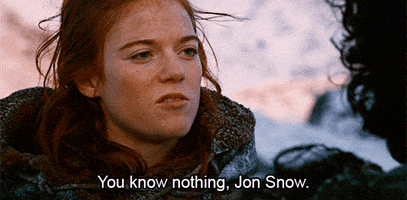

How i ended up as game developer & reverse engineer

I am a Computer Science student (technically you never graduate from field like this), and did internship as Core Network Engineer at VODAFONE and COSMOTE(ISP providers). It turned out that i did what i wanted to do in my early years to be a Game Developer-artist and Reverse Engineer(yeah still too much for one). My Dream job did't landed on me so i decided to think what i really wanted to do. It is the era of youtube why not teach and share what tou learn? so there you have it i started a youtube channel!. Lets outrun PEWDIEPIE channel.
Instead of me pursuing jobs the old fashioned way i said let me do something that actually the jobs to come to me. That's hard part especially when you are in today's IT world where everything it's interesting, it's difficult to choose something and stay on in. I always was the person that i keep doing something till i understand how it worked and then drop it out and start something else uknown to me.
"if you do not change direction, you may end up where you are heading." Lao Tzu
Somehow it seemed like from my early years, I knew in my subconscious where I was going, but I did not really know in my consciousness what I was doing other than that I liked it. It would be too far to get there. I had no special teacher or anything but thanks to the Internet and the people around it that they are open minded and grateful to share things i actually managed to learn! Even English Language i really learned it by listening youtube and not from School lessons i had! (i am not the kind of person that's doing homework really) I was always doing something else in my College years instead of doing their work, i was spending my time on completely different courses(that was because i knew the subjects but i did not wish to spend time on them but that resulted in medium grades) If there is something to "take away" always do what your heart tells you do not listen to anyone that is my advice well except if you are a more logical person.
"if you do not share what you learned you actually did not learn anything." Me?
Well from the above quote i mean share it even if you are not expert because if you waiting for that day actually it will never come because there is the Impostor Sydrome yeah sounds funny but it is actually real I've been learning stuff since my 12th year of old but till today i feel ...
"I know that I know nothing." Socrates 
and no it's not because i am humble. Check out my social media and follow me for latest catches!.
Confused yet? that's how life is… it’s amazing!